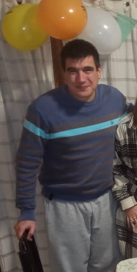

Mas de 7 años en el desarrollo de automatizaciones industriales, programando y cableando tableros.
Educación
- Técnico Universitario en Electrónica
- 2002-2013. Universidad Tecnológica Nacional
- Inglés
- Intermedio avanzado
- Portugués
- Básico

Experiencia profesional
- Responsable de Electrónica y programación
- 2019-Actualidad. Programación de máquinas de envasado automático. Armado de tableros de control. Cableado de máquinas. Prueba y puesta a punto de máquinas en planta. Servicio técnico a clientes.
- Jefe de servicio técnico
- 2018-2019. Asegurar el cumplimiento de los servicios técnicos según los requerimientos del cliente, brindando el mejor asesoramiento, calidad de repuesta y de servicio. Atender y resolver las necesidades del cliente en base a las garantías de los productos vigentes.
- Programador
- 2014-2018. Programación de máquinas de envasado automático. Cableado de máquinas. Prueba y puesta a punto de máquinas en planta.
Premios
- Concurso “Trabajando con Microcontroladores Freescale”, nota de aplicación transmisión infrarroja.
- 2008. 2° puesto
- Concurso “Trabajando con Microcontroladores Freescale”, nota de aplicación detector sísmico.
- 2007. 8° puesto
Otros
- Redacción libro sobre Domótica
- Dibujo de planos eléctricos